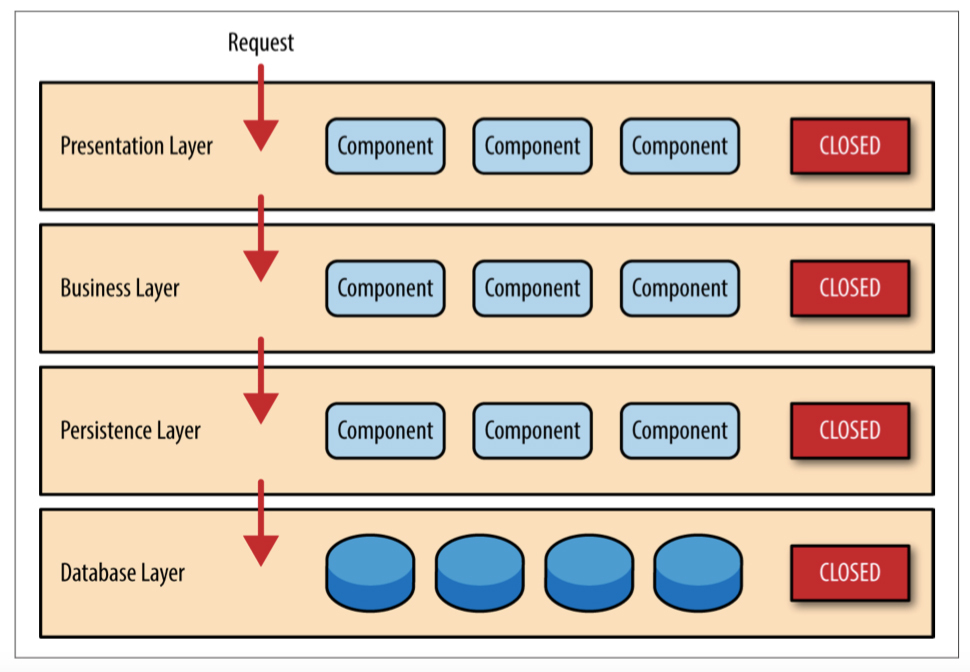

- 00 _导读 _ 什么是“The Fenix Project”？.md
- 00 开篇词 _ 如何构建一个可靠的分布式系统？.md
- 01 _ 原始分布式时代：Unix设计哲学下的服务探索.md
- 02 _ 单体系统时代：应用最广泛的架构风格.md
- 03 _ SOA时代：成功理论与失败实践.md
- 04 _ 微服务时代：SOA的革命者.md
- 05 _ 后微服务时代：跨越软件与硬件之间的界限.md
- 06 _ 无服务时代：“不分布式”云端系统的起点.md
- 07 _ 远程服务调用（上）：从本地方法到远程方法的桥梁.md
- 08 _ 远程服务调用（下）：如何选择适合自己的RPC框架？.md
- 09 _ RESTful服务（上）：从面向过程编程到面向资源编程.md
- 10 _ RESTful服务（下）：如何评价服务是否RESTful？.md
- 11 _ 本地事务如何实现原子性和持久性？.md
- 12 _ 本地事务如何实现隔离性？.md
- 13 _ 全局事务和共享事务是如何实现的？.md
- 14 _ 分布式事务之可靠消息队列.md
- 15 _ 分布式事务之TCC与SAGA.md
- 16 _ 域名解析系统，优化HTTP性能的第一步.md
- 17 _ 客户端缓存是如何帮助服务器分担流量的？.md
- 18 _ 传输链路，优化HTTP传输速度的小技巧.md
- 19 _ 如何利用内容分发网络来提高网络性能？.md
- 20 _ 常见的四层负载均衡的工作模式是怎样的？.md
- 21 _ 服务端缓存的三种属性.md
- 22 _ 分布式缓存如何与本地缓存配合，提高系统性能？.md
- 23 _ 认证：系统如何正确分辨操作用户的真实身份？.md
- 24 _ 授权（上）：系统如何确保授权的过程可靠？.md
- 25 _ 授权（下）：系统如何确保授权的结果可控？.md
- 26 _ 凭证：系统如何保证与用户之间的承诺是准确完整且不可抵赖的？.md
- 27 _ 保密：系统如何保证敏感数据无法被内外部人员窃取滥用？.md
- 28 _ 传输（上）：传输安全的基础，摘要、加密与签名.md
- 29 _ 传输（下）：数字证书与传输安全层.md
- 30 _ 验证：系统如何确保提交给服务的数据是安全的？.md
- 31 _ 分布式共识（上）：想用好分布式框架，先学会Paxos算法吧.md
- 32 _ 分布式共识（下）：Multi Paxos、Raft与Gossip，分布式领域的基石.md
- 33 _ 服务发现如何做到持续维护服务地址在动态运维中的时效性？.md
- 34 _ 路由凭什么作为微服务网关的基础职能？.md
- 35 _ 如何在客户端实现服务的负载均衡？.md
- 36 _ 面对程序故障，我们该做些什么？.md
- 37 _ 要实现某种容错策略，我们该怎么做？.md
- 38 _ 限流的目标与模式.md
- 39 _ 如何构建零信任网络安全？.md
- 40 _ 如何实现零信任网络下安全的服务访问？.md
- 41 _ 分布式架构中的可观测到底说的是什么？.md
- 42 _ 分析日志真的没那么简单.md
- 43 _ 一个完整的分布式追踪系统是什么样子的？.md
- 44 _ 聚合度量能给我们解决什么问题？.md
- 45 _ 模块导学：从微服务到云原生.md
- 46 _ 容器的崛起（上）：文件、访问、资源的隔离.md
- 47 _ 容器的崛起（下）：系统、应用、集群的封装.md
- 48 _ 以容器构建系统（上）：隔离与协作.md
- 49 _ 以容器构建系统（下）：韧性与弹性.md
- 50 _ 应用为中心的封装（上）：Kustomize与Helm.md
- 51 _ 应用为中心的封装（下）：Operator与OAM.md
- 52 _ Linux网络虚拟化（上）：信息是如何通过网络传输被另一个程序接收到的？.md
- 53 _ Linux网络虚拟化（下）：Docker所提供的容器通讯方案有哪些？.md
- 54 _ 容器网络与生态：与CNM竞争过后的CNI下的网络插件生态.md
- 55 _ 谈谈Kubernetes的存储设计理念.md
- 56 _ Kubernetes存储扩展架构：一个真实的存储系统如何接入或移除新存储设备？.md
- 57 _ Kubernetes存储生态系统：几种有代表性的CSI存储插件的实现.md
- 58 _ Kubernetes的资源模型与调度器设计.md
- 59 _ 透明通讯的涅槃（上）：通讯的成本.md
- 60 _ 透明通讯的涅槃（下）：控制平面与数据平面.md
- 61 _ 服务网格与生态：聊聊服务网格的两项标准规范.md
- 63 _ 基于Spring Boot的单体架构.md
- 64 _ 基于Spring Cloud的微服务架构.md
- 65 _ 基于Kubernetes的微服务架构.md
- 66 _ 基于Istio的服务网格架构.md
- 67 _ 基于云计算的无服务架构.md
- 春节特别放送（上）_ 有的放矢，事半功倍.md
- 春节特别放送（下）_ 积累沉淀，知行合一.md
- 用户故事 _ 詹应达：持续成长，不惧未来.md
- 结束语 _ 程序员之路.md
- 结课测试 _ 一套习题，测出你的掌握程度.md
02 _ 单体系统时代：应用最广泛的架构风格
你好，我是周志明。今天，我们一起来探索单体系统时代。
这一讲，我会带你去了解以单体架构构建的软件系统，都有哪些优势和缺点，还有哪些容易让人产生错误理解的误区。在探索的过程中，你可以同时思考一下，为什么单体架构能够在相当长的时间里成为软件架构的主流风格，然后再对比下我在这一讲最后给出答案。
大型单体系统
单体架构是绝大部分软件开发者都学习和实践过的一种软件架构，很多介绍微服务的图书和技术资料中，也常常会把这种架构形式的应用称作“巨石系统”（Monolithic Application）。
在整个软件架构演进的历史进程里，单体架构是出现时间最早、应用范围最广、使用人数最多、统治历史最长的一种架构风格。但“单体”这个名称，却是从微服务开始流行之后，才“事后追认”所形成的概念。在这之前，并没有多少人会把“单体”看成一种架构。
如果你去查找软件架构的开发资料，可以轻轻松松找到很多以微服务为主题的图书和文章，但却很难能找到专门教我们怎么开发单体系统的任何形式的材料。
这一方面体现了单体架构本身的简单性；另一方面也体现出，在相当长的时间里，我们都已经习惯了，软件架构就应该是单体这种样子的。
那在剖析单体架构之前呢，我们有必要先搞清楚一个思维误区，那就是单体架构是落后的系统架构风格，最终会被微服务所取代。
因为在许多微服务的研究资料里，单体系统往往是以“反派角色”的身份登场的，比如著名的微服务入门书《微服务架构设计模式》，第一章的名字就是“逃离单体的地狱”。而这些材料所讲的单体系统，其实都有一个没有明说的隐含定语：“大型的单体系统”。
对于小型系统，也就是用单台机器就足以支撑其良好运行的系统来说，这样的单体不仅易于开发、易于测试、易于部署，而且因为各个功能、模块、方法的调用过程，都是在进程内调用的，不会发生进程间通讯，所以程序的运行效率也要比分布式系统更高，完全不应该被贴上“反派角色”的标签。要我说的话，反倒是那些爱赶技术潮流，却不顾需求现状的微服务吹捧者更像是个反派。
进程间通讯：Inter-Process Communication，IPC。RPC属于IPC的一种特例，但请注意，这里两个“PC”不是同个单词的缩写，关于IPC与RPC的知识，在“远程服务调用”这个小章节中我会详细讲解。
所以，当我们在讨论单体系统的缺陷的时候，必须基于软件的性能需求超过了单机，软件的开发人员规模明显超过了“2 Pizza Teams”范畴的前提下，这样才有讨论的价值。那么，在咱们课程后续讨论中，我所说的单体，都应该是特指的“大型的单体系统”。
也正因如此，在这一讲的开篇中“单体是出现最早的架构风格”，跟我在上一讲介绍“原始分布式时代”时，在开篇中提到的“使用多个独立的分布式服务共同构建一个更大型系统的设想与实际尝试，反而要比今天你所了解的大型单体系统出现的时间更早”，这两句话实际上并没有矛盾的地方。
可拆分的单体系统
好了，回到主题，接下来我就带你来详细、深入地了解一下单体系统，看看“巨石系统”为何仍然是可以拆分的。
尽管“Monolithic”这个词语本身的意思“巨石”，确实是带有一些“不可拆分”的隐含意味，但我们也不能简单粗暴地把单体系统在维基百科上的定义“All in One Piece”，翻译成“铁板一块”，它其实更接近于自给自足（Self-Contained）的含义。
单体系统- Monolith means composed all in one piece. The Monolithic application describes a single-tiered software application in which different components combined into a single program from a single platform.- —— Monolithic Application，Wikipedia
当然了，这种“铁板一块”的译法也不全是段子。我相信肯定有一部分人说起单体架构、巨石系统的缺点，脑海中闪过的第一印象就是“不可拆分”，难以扩展，所以它才不能支撑起越来越大的软件规模。这种想法我觉得其实是有失偏颇的，至少不完整。
我为什么会这么判断呢？
因为从纵向角度来看，在现代信息系统中，我从来没有见到过实际的生产环境里，有哪个大型的系统是完全不分层的。
分层架构（Layered Architecture）已经是现在几乎所有的信息系统建设中，都普遍认可、普遍采用的软件设计方法了。无论是单体还是微服务，或者是其他架构风格，都会对代码进行纵向拆分，收到的外部请求会在各层之间，以不同形式的数据结构进行流转传递，在触及到最末端的数据库后依次返回响应。
那么，对于单体架构来说，在这个意义上的“可拆分”，单体其实完全不会展露出丝毫的弱势，反而还可能因为更容易开发、部署、测试而更加便捷。比如说，当前市面上所有主流的IDE，如Intellij IDEA、Eclipse等，都对单体架构最为友好。IDE提供的代码分析、重构能力，以及对编译结果的自动化部署和调试能力，都是主要面向单体架构而设计的。

（来自O’Reilly的开放文档《Software Architecture Patterns》）
而在横向角度的“可拆分”上，单体架构也可以支持按照技术、功能、职责等角度，把软件拆分为各种模块，以便重用和团队管理。
实际上，单体系统并不意味着就只能有一个整体的程序封装形式，如果有需要，它完全可以由多个JAR、WAR、DLL、Assembly或者其他模块格式来构成。
即使是从横向扩展（Scale Horizontally）的角度来衡量，如果我们要在负载均衡器之后，同时部署若干个单体系统的副本，以达到分摊流量压力的效果，那么基于单体架构，也是轻而易举就可以实现的。
非独立的单体
不过，在“拆分”这方面，单体系统的真正缺陷实际上并不在于要如何拆分，而在于拆分之后，它会存在隔离与自治能力上的欠缺。
在单体架构中，所有的代码都运行在同一个进程空间之内，所有模块、方法的调用也都不需要考虑网络分区、对象复制这些麻烦事儿，也不担心因为数据交换而造成性能的损失。
可是，在获得了进程内调用的简单、高效这些好处的同时，也就意味着，如果在单体架构中，有任何一部分的代码出现了缺陷，过度消耗进程空间内的公共资源，那所造成的影响就是全局性的、难以隔离的。
我们要怎么理解这个问题呢？
首先，一旦架构中出现了内存泄漏、线程爆炸、阻塞、死循环等问题，就都将会影响到整个程序的运行，而不仅仅是某一个功能、模块本身的正常运作；而如果消耗的是某些更高层次的公共资源，比如端口占用过多或者数据库连接池泄漏，还将会波及到整台机器，甚至是集群中其他单体副本的正常工作。
此外，同样是因为所有代码都共享着同一个进程空间，如果代码无法隔离，那也就意味着，我们无法做到单独停止、更新、升级某一部分代码，因为不可能有“停掉半个进程，重启1/4个进程”这样不合逻辑的操作。所以，从动态可维护性的角度来说，单体系统也是有所不足的，对于程序升级、修改缺陷这样的工作，我们往往需要制定专门的停机更新计划，而且做灰度发布也相对会更加复杂。
补充：这里我说的“代码无法隔离，无法做到单独停止、更新……”，其实严谨来说还是有办法的，比如可以使用OSGi这种运行时模块化框架，只是会很别扭、很复杂。
这里就涉及到一个需要权衡的问题：如果说共享同一进程获得简单、高效这些优势的代价，是损失了各个功能模块的自治、隔离能力，那这两者孰轻孰重呢？这个问题很有代表性，我们还可以换个角度思考一下，它的潜台词其实是在比较微服务、单体架构哪种更好用、优秀？
在我看来，“好用和优秀”不一定是绝对的。我们看一个例子吧。
比如说，沃尔玛将超市分为仓储部、采购部、安保部、库存管理部、巡检部、质量管理部、市场营销部，等等，来划清职责，明确边界，让管理能力可以支持企业的成长规模；但如果你家楼下开的小卖部，爸、妈加儿子，再算上看家的中华田园犬小黄，一共也就只有四名员工，也去追求“先进管理”，来划分仓储部、采购部、库存管理部……的话，那纯粹是给自己找麻烦。
在单体架构下，哪怕是信息系统中两个毫无关联的子系统，我们也都必须部署到一起。当系统规模小的时候，这是个优势；但当系统规模扩大、程序需要修改的时候，相应的部署成本、技术升级时的迁移成本，都会变得非常高。
就拿沃尔玛例子来说，也就是当公司规模比较小的时候，让安保部和质检部两个不相干的部门在同一栋大楼中办公，算是节约资源。但当公司的人数增加了，办公室已经变得拥挤不堪的时候，我们也最多只能在楼顶加盖新楼层（相当于增强硬件性能），而不能让安保、质检分开地方办公，这才是缺陷所在。
另外，由于隔离能力的缺失，除了会带来难以阻断错误传播、不便于动态更新程序的问题，还会给带来难以技术异构等困难。
技术异构：后面在介绍微服务时，我会提到马丁 · 福勒（Martin Fowler）提出的9个特征，技术异构就是其中之一。它的意思是说允许系统的每个模块，自由选择不一样的程序语言、不一样的编程框架等技术栈去实现。单体系统的技术栈异构不是一定做不到，比如JNI就可以让Java混用C/C++，但是这也是很麻烦的事，是迫不得已下的选择。
不过，在我看来，我们提到的这些问题，还不是我们今天以微服务去代替单体系统的根本原因。我认为最根本的原因是：单体系统并不兼容“Phoenix”的特性。
单体这种架构风格，潜在的观念是希望系统的每一个部件，甚至每一处代码都尽量可靠，不出、少出错误，致力于构筑一个7×24小时不间断的可靠系统。
这种观念在小规模软件上能运作良好，但当系统越来越大的时候，交付一个可靠的单体系统就会变得越来越有挑战性。就像我在导读《什么是“The Fenix Project”？》中所说的，正是随着软件架构的不断演进，我们构建可靠系统的观念，开始从“追求尽量不出错”，转变为了正视“出错是必然”。实际上，这才是微服务架构能够挑战，并且能逐步开始代替运作了几十年的单体架构的根本驱动力。
不过，即使是为了允许程序出错，为了获得隔离、自治的能力，为了可以技术异构等目标，也并不意味着一定要依靠微服务架构。在新旧世纪之交，人们曾经探索过几种服务的拆分方法，把一个大的单体系统拆分为若干个更小的、不运行在同一个进程的独立服务，这些服务拆分的方法，后来导致了面向服务架构（Service-Oriented Architecture）的一段兴盛期，我们把它称作是“SOA时代”。
下一讲呢，我就带你来一起探索这个架构时代的特点与得失，你可以期待一下。
小结
这节课，我们一起学习了单体架构。单体作为迄今为止使用人数最多的一种软件架构风格，自身必定是有可取之处的，比如说，易于分层、易于开发、易于部署测试、进程内的高效交互，等等，这些都是单体架构的优点。
可是，今天以微服务为代表的分布式架构的呼声如此之高，也同样说明，单体至少在当今的某些领域中存在一些关键性的问题，而我在前面提到的自治、隔离，谈到的单体不兼容“Phoenix”的特性，这些也正是单体系统的缺陷所在，也是我在下一讲中，要讲的SOA、微服务等分布式架构的核心目标所在。
一课一思
上一讲，我在给你介绍原始分布式时代的时候，提到过软件系统发展的道路有两条，一条是“分布式”路径，而单体架构是“不分布式”这条路径所演化的结果。经过这节课的讨论，我们已经知道了单体最终并不会被微服务所取代，未来它仍然会长期存在。
那么，在了解了它的演化历史的基础上，请你思考一下：未来的单体系统将会朝着怎样的方向发展呢？欢迎在留言区分享你的见解。
在下一讲中，我会给你介绍另一条“分布式”路径下的架构风格：SOA架构。不过到了这一模块的最后一讲时，我还将重新回到原点，讨论这两条架构演化路径的未来。到时候，你可以看看，你思考的答案是否跟我观察到的一致。
好，这节课就到这里，如果你觉得有收获，欢迎你把今天的内容分享给更多的朋友。
© 2019 - 2023 Liangliang Lee. Powered by gin and hexo-theme-book.